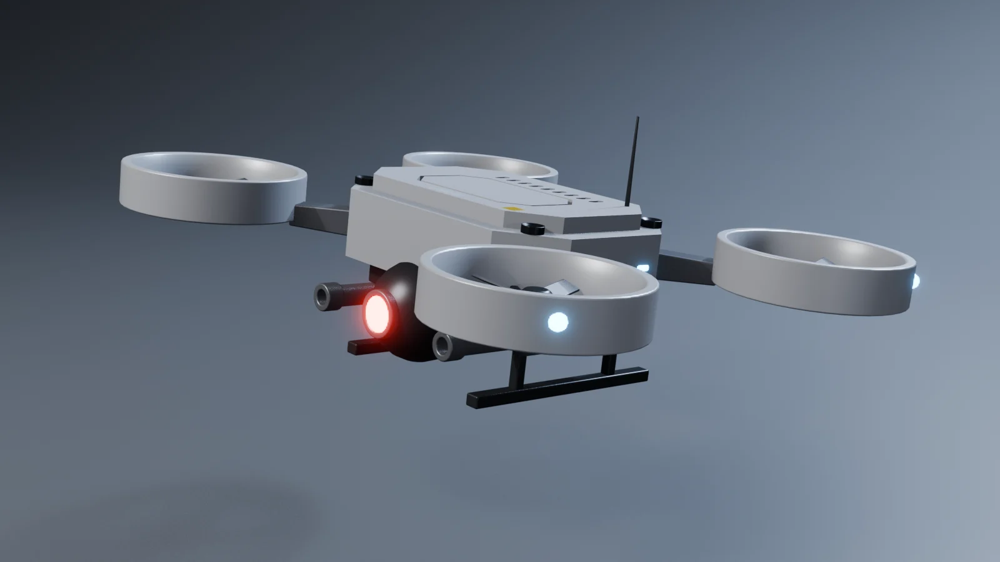
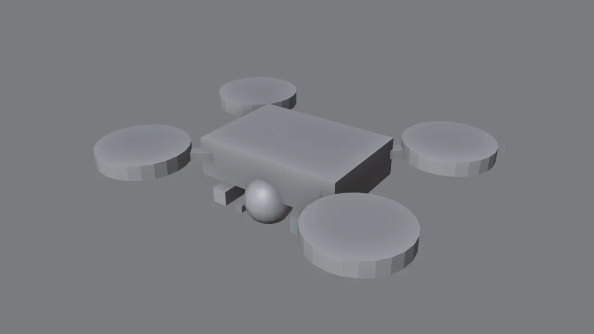
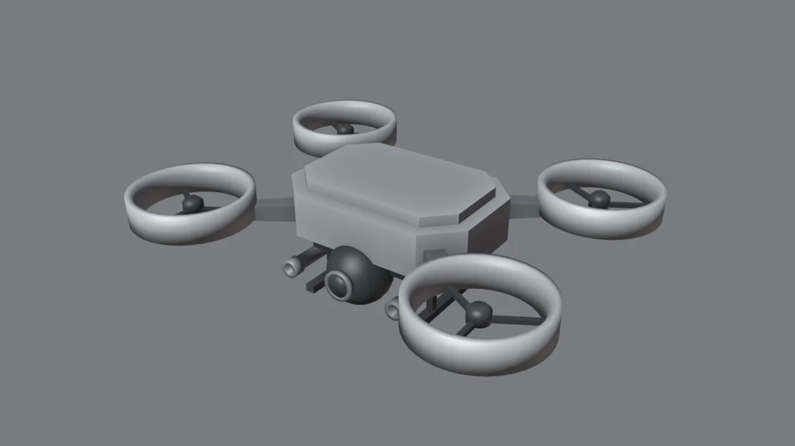
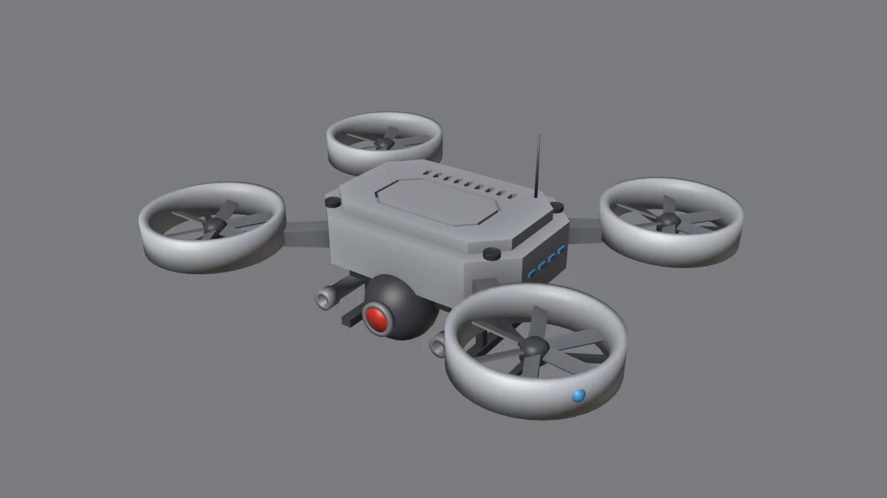
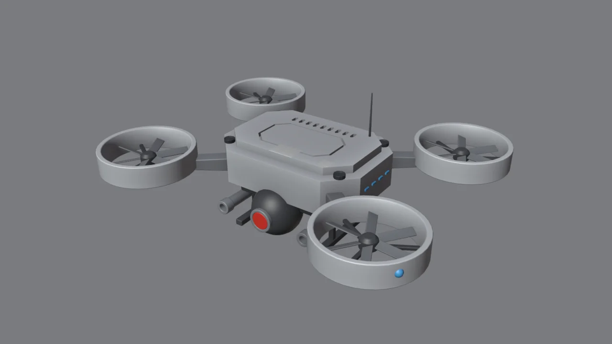

Lo que vas a forjar // objetivo

Gíralo por fases // 3D
Diseño y blockout

Antes de modelar, responde: ¿qué hace? Vigila y dispara. Entonces necesita un ojo grande y visible, armas y rotores protegidos (carenados) para entrar en sitios estrechos. El diseño sale de la función (módulo 6).
- Una caja para el cuerpo (1 × 0.7 × 0.26), 4 cilindros para los rotores, una esfera para la torreta y cajas para cañones y patines.
- Haz un rotor y un brazo, y luego Forja Tools → Espejo X y Espejo Y: tienes los cuatro. Si cambias uno, cambian todos.
- Comprueba la silueta desde arriba, de frente y de lado.
El cuerpo

- Cuerpo: chaflán de 0.16 en las aristas verticales (Ctrl+B), como la placa del módulo 3.
- Tapa: selecciona la cara de arriba y Forja Tools → Sacar (margen 0.07, altura 0.05): sale la meseta.
- Vientre oscuro: una pieza aparte, más pequeña, debajo. Es la estructura que asoma bajo el blindaje (módulo 9).
- Brazos: un perfil que se estrecha hacia el rotor (perfil + Solidify, módulo 6). Estrecharse hacia fuera hace que parezca más ligero.
Conductos con torno (Screw)
Las piezas redondas con perfil (conductos, bujes, cañones, el marco del ojo) se hacen dibujando medio perfil y girándolo, como en un torno de verdad:
- Vista frontal (Num 1). Añade un plano, entra en modo edición, bórralo todo y dibuja con Ctrl+clic derecho el perfil de la pared del conducto: un rectángulo estrecho con un bisel en el labio superior, situado a 0.25–0.3 del eje.
- Modificador Screw: Angle 360°, Steps 40, Merge ✓. El perfil gira y se convierte en un anillo.
- Alternativa en modo edición: herramienta Spin de la barra izquierda (o Shift+A → Mesh → Circle + Extrude), si quieres aplicar el resultado.
¿Por qué un torno? Para cambiar la forma del conducto, editas 5 vértices del perfil y no 200 de la malla. Es el mismo principio no destructivo de los cortadores.
Aspas en círculo
- Una sola aspa: una caja fina girada unos 22° sobre su eje largo, para que tenga ángulo de ataque, como una hélice real.
- Coloca el cursor 3D en el centro del rotor y pulsa Forja Tools → En círculo con 6 copias. Sin el addon: Array con Object Offset apuntando a un Empty girado 60°.
- Buje en el centro (otro torno) y tres soportes del motor hasta el conducto.
Truco de render: si animas el dron, las aspas giran tan rápido que se verían borrosas. Un disco semitransparente con desenfoque de movimiento queda mejor que las aspas reales.
Mono-ojo y cañones
- Torreta: UV Sphere oscura bajo el morro. Un marco con torno (anillo con labio) y, delante, un disco con material emisivo rojo (Strength ~14).
- Cañones: perfil de torno (base gruesa, cañón fino y boca con anillo) girado 90° para apuntar adelante. Hazlo una vez y Espejo X.
- Patines: dos patas y una barra por lado. Simples, oscuros y robustos.
Lección aprendida al hacer este dron: el primer ojo quedó dentro de la esfera de la torreta y no se veía. Cuando una pieza «desaparece», pulsa Alt+Z (rayos X) y mírala de lado: casi siempre está tapada por otra.
Detalle con Forja Tools

| Detalle | Con Forja Tools | Técnica (módulo) |
|---|---|---|
| Línea de panel en la meseta | Modo edición, caras → Línea de panel | Cortador con Solidify (3) |
| Rejilla trasera | Ranura + En fila ×9 | Cortador + Array (3) |
| Luces de los flancos | Piezas → LED + En fila | Emisivo + Array (1, 3) |
| Luces de navegación | Material Luz roja / azul | Emisivo (8) |
| Tornillos de la tapa | Piezas → Tornillo en el cursor | Floaters (3) |
| Bisel en todo | Selecciona todo → Afilar | Receta (2) |
| «UNIT-01» y franjas | — | Decals con Shrinkwrap (11) |

En vuelo
- Emparenta todo con un Empty «Vuelo» (los cortadores también, ¡módulo 3!).
- Gira el Empty −8° en X: un dron avanzando lleva el morro bajo. Un poco de giro en Z para la composición.
- Forja Tools → Estudio de render y cámara ligeramente por encima: se ven los rotores por dentro.
- Extra: anima el Empty subiendo y bajando unos centímetros en bucle (módulo 12): flotará.
Reto: tu flota // checklist
Diseña tu propio dron o vehículo: un dron de carga con contenedor, uno explorador con antenas y sensores, o un vehículo de 6 ruedas.